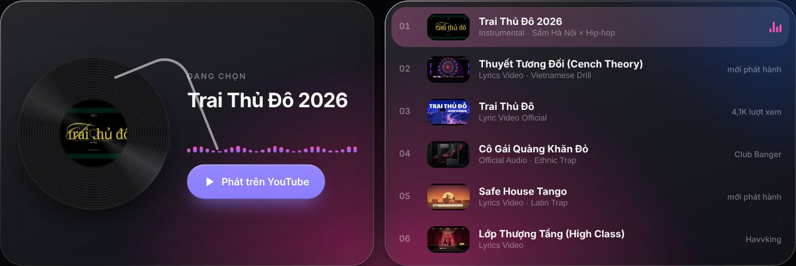
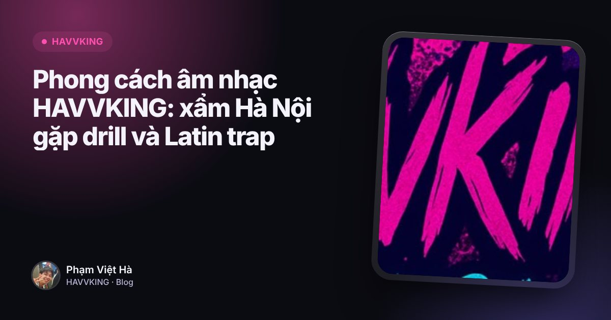
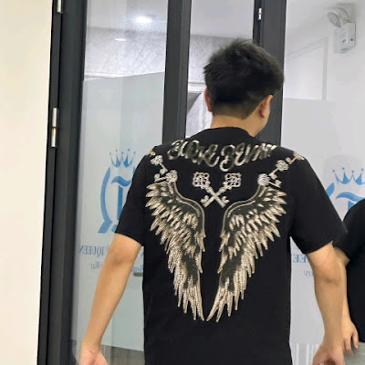

Mục lục
Trai Thủ Đô 2026 là bản instrumental của HAVVKING, mang nhãn "xẩm Hà Nội × hip-hop" trên kênh YouTube Havvking Official. Bài nằm ở vị trí đầu tiên trong danh sách phát trên portfolio của Phạm Việt Hà và có khoảng 14,9 nghìn lượt xem (tháng 10/2026).
Một bản không lời về Hà Nội
Phần lớn bài của HAVVKING là rap có lời. Trai Thủ Đô 2026 thì khác: đây là bản instrumental, để chất liệu xẩm Hà Nội và nhịp hip-hop tự kể chuyện. Nếu bạn cần một bản nhạc nền mang không khí phố cổ nhưng vẫn đủ hiện đại, đây là bài nên thử.

Trai Thủ Đô: phiên bản có lời
Cùng chủ đề còn có Trai Thủ Đô, phát hành dưới dạng lyric video chính thức (khoảng 4,1 nghìn lượt xem). Nghe hai bản liền nhau, bạn sẽ thấy cùng một chủ đề "thủ đô" được kể theo hai cách: một bản có lời rap, một bản để giai điệu tự nói.
Vì sao "xẩm Hà Nội × hip-hop"?
Xẩm là lối hát đường phố gắn với Hà Nội xưa. Đặt nó cạnh hip-hop, vốn cũng là âm nhạc đường phố, là cách HAVVKING nối hai thế hệ của cùng một thành phố. Màu nhạc này xuất hiện trong dòng giới thiệu kênh: xẩm Hà Nội gặp hip-hop hiện đại, drill, trap Latin.

Đọc thêmPhong cách âm nhạc HAVVKING: xẩm Hà Nội gặp drill và Latin trapNghe Trai Thủ Đô 2026 ở đâu?
- YouTube: Trai Thủ Đô 2026 trên kênh Havvking Official.
- Spotify và SoundCloud: tìm "Havvking" hoặc vào trang tổng hợp các nơi nghe nhạc HAVVKING.
Dùng Trai Thủ Đô 2026 làm nhạc nền video
Bản instrumental hợp làm nhạc nền cho video ngắn về Hà Nội. Nếu bạn muốn cắt đúng đoạn cao trào cho TikTok hay CapCut, Micow có công cụ tìm hook và đặt drop rơi đúng giây bạn chọn. Chỉ dùng bài cho mục đích cá nhân, hoặc liên hệ HAVVKING khi cần dùng cho mục đích thương mại.

Liên hệ HAVVKINGHợp tác âm nhạc, xin phép sử dụng bài